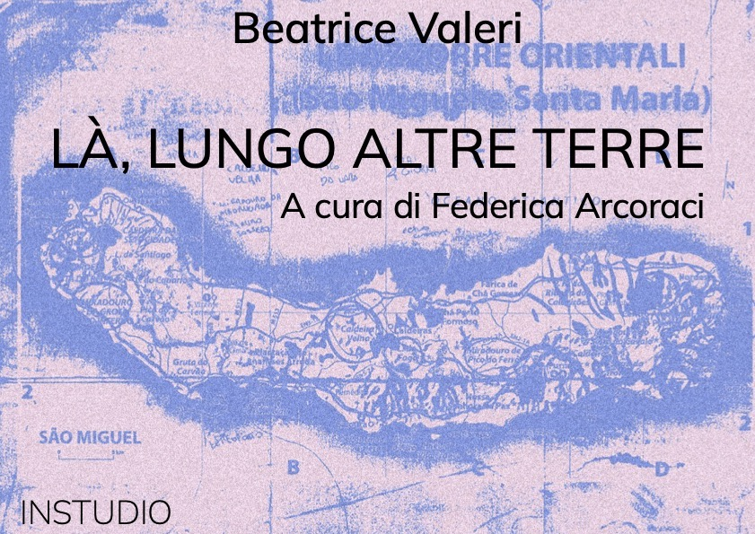
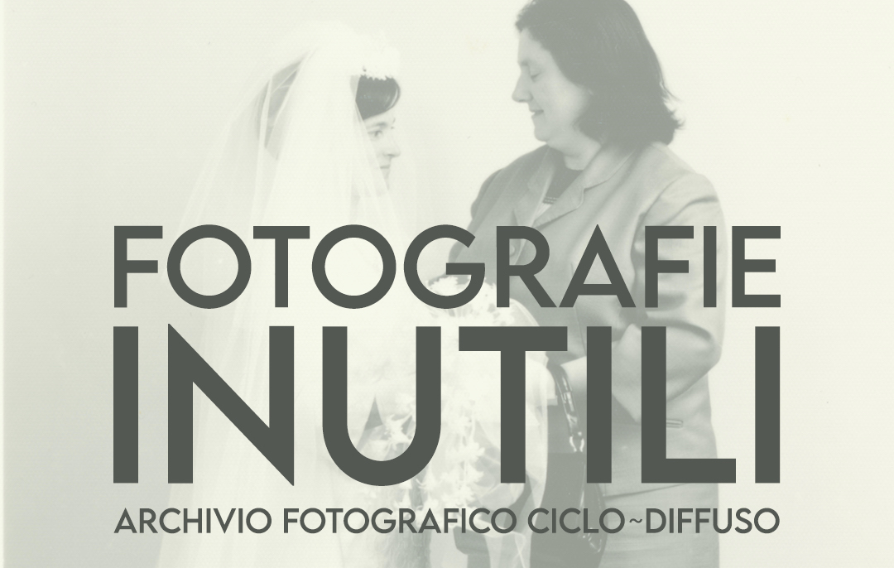

Artist: Beatrice Valeri
Location: INSTUDIO Via Cesare Battisti 237, Padova
La ricerca artistica di Beatrice Valeri si focalizza sul suo rapporto con la natura e in particolare sulla persistenza delle impressioni ricevute dalla sua contemplazione.
Negli ultimi anni l’artista ha viaggiato esplorando i paesaggi delle Azzorre e delle Dolomiti.
Tornata a casa, ha poi cercato di rievocare quei luoghi dipingendoli completamente a memoria. Il risultato di questa operazione costituisce la serie di lavori qui esposti.

Scarica testo curatoriale ↓
Foto della mostra
Artist: Luca Bortolato
Fotografie Inutili è un progetto che indaga il ruolo assunto dagli album familiari quando vengono considerati objet trouvè, e il suo significato nei processi di selezione, appropriazione e archiviazione come pratica incentrata sull’ identità e sulla memoria. Fotografie Inutili vuole aprire ad una riflessione in cui si ripensi l’archivio fotografico come metodo post-moderno, fonte di ispirazione per la realizzazione di opere che sono sia visive che critiche come punto di partenza per favorire nuove prospettive di archivistica partecipativa. L’archivio viene così concepito come agente attivo che dà forma sia all'identità personale che alla memoria collettiva e culturale.

Scarica progetto ↓
Volcán is a curatorial collective and platform for collaboration and dissemination around contemporary art. A bridge or facilitator of dialogue between artist from different parts of the world, as well as a space to develop projects with special attention to the work of young artits.
The team develops practices of curatorial experimentation, based on theoretical training and the exchange of esperiences related to the organizazion of exhibitions.
Check the project ↓
Find out more on instagram
→
write me at
federica.arcoraci@gmail.com
or find me on
instagram
you can also read my
CV